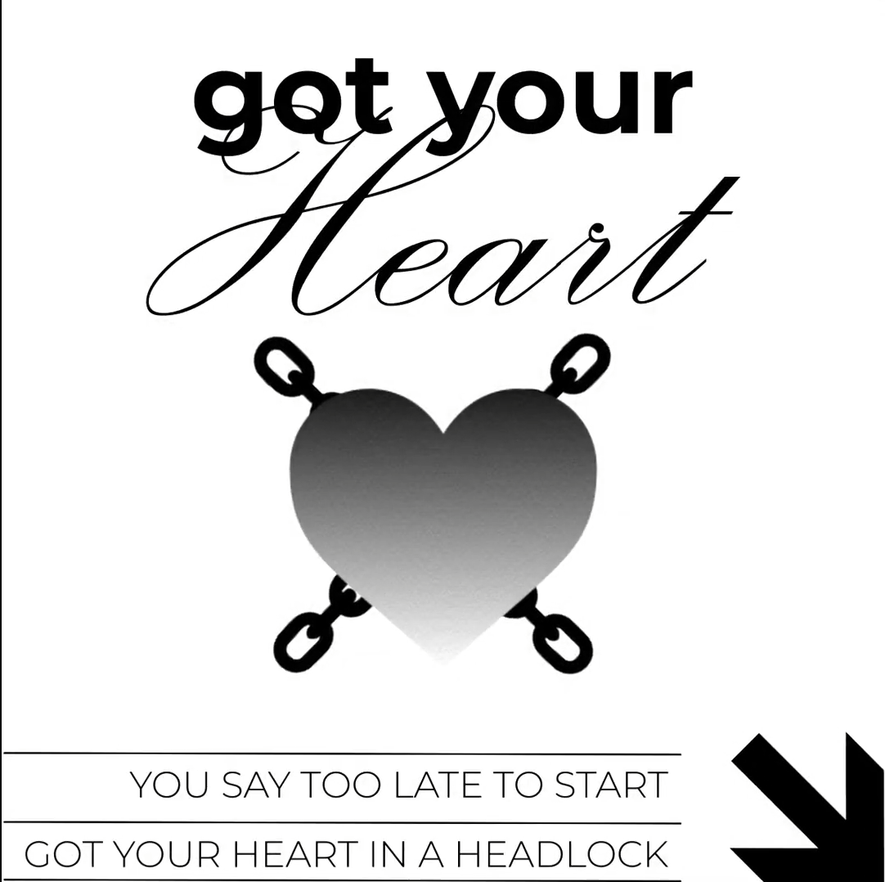
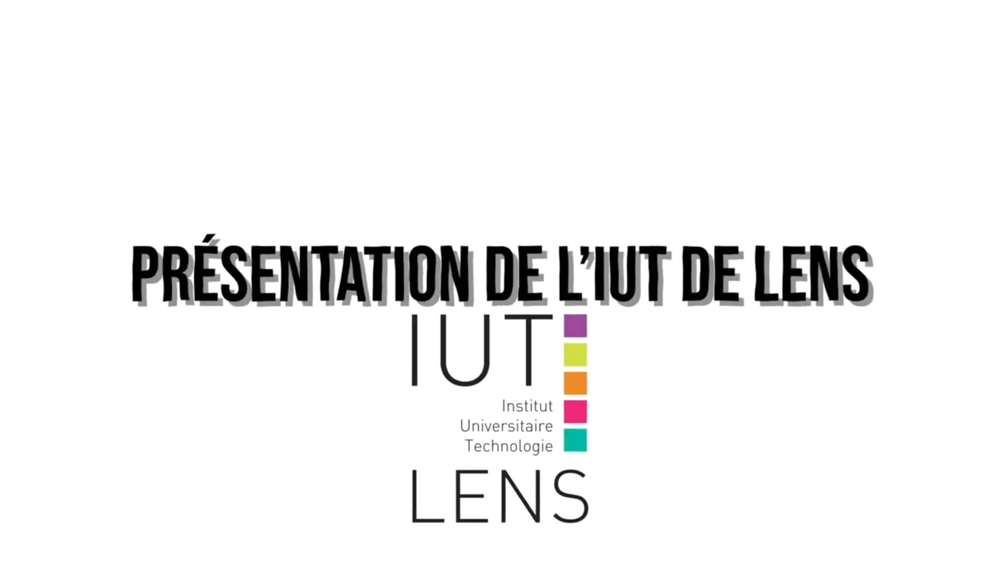
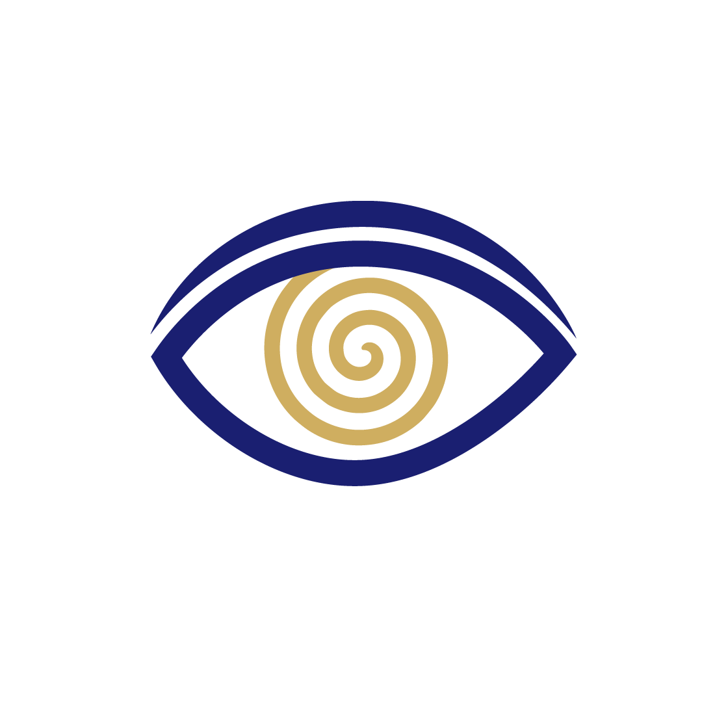
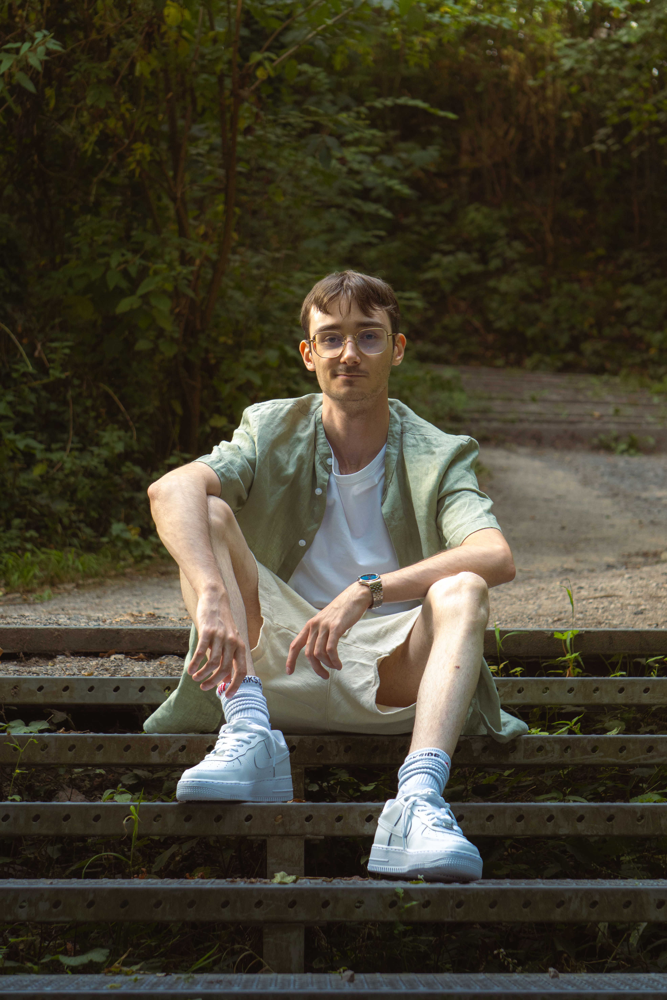

Catalogue des Projets
Une vue exhaustive de mes réalisations en montage, habillage graphique, étalonnage et reportages photographiques.

Edit Motion Design — Headlock
Synchronisation visuelle et géométrie rythmique animée sur piste sonore complexe.

Clip Musical
Production vidéo intégrant des effets visuels, montage rythmique et travail colorimétrique.

Promotion IUT
Film promotionnel dynamique mettant en lumière la vie étudiante et les infrastructures.

Nuit de l'Hypnose
Conception de l'identité visuelle complète et des supports pour un événement caritatif.

Karting & Adrénaline
Prises de vue haute vitesse sur piste, figeant la tension, les trajectoires et l'intensité.

Série Portrait & Mood
Portraits en lumière ambiante naturelle avec traitement poussé des contrastes et de la texture.